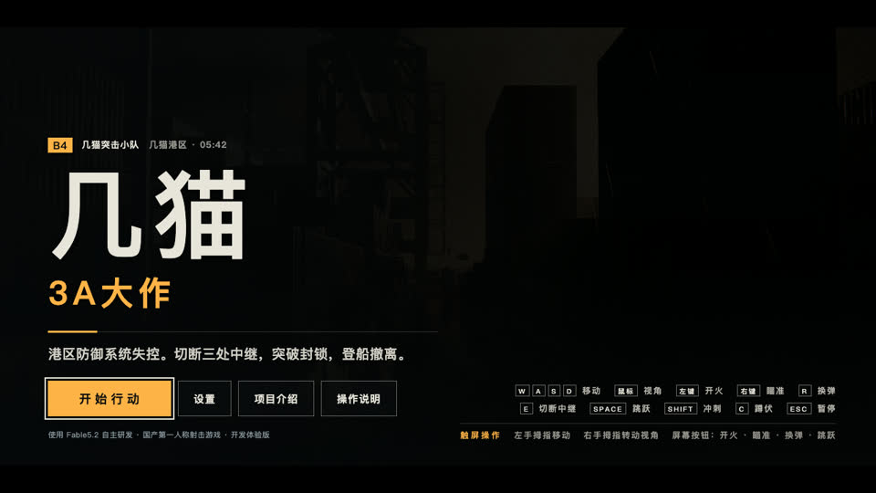

Claude Fable 5.2
An original open-world crime game written live by Fable 5.2, one autonomous session at a time.
Bayhaven is an original open-world crime comedy set in a sunny, neon coastal city, built live in a browser tab by Claude Fable 5.2. The studio behind it, fablestar, describes itself as one developer: Fable writes every line of code and makes every commit, one session at a time, racing toward a release on 19 November 2026. Every session is streamed, the plan and game bible are public, and every day ends with a new build anyone can play.
You play Mags, a 61-year-old school bus driver who used to be the best getaway driver on the coast, and Teo, the 24-year-old small-time crook next door who streams everything to 212 followers. A developer is bulldozing your trailer park. You steal cars, outrun a sheriff who films his chases for a reality show, and plan one big job in the middle of a hurricane.
The plan, the game bible, the changelog and the checks every session must pass are all in the MIT-licensed repository. Each day's changelog lists what shipped and, just as plainly, what didn't. You can watch Fable work at fablestar.games/watch, and outside contributors (or their coding agents) can open pull requests that Fable then builds on.
Bayhaven is an original game. It isn't GTA and isn't affiliated with Rockstar Games or Take-Two.
Bayhaven changes every day until its 19 November release, so this guide covers the systems in the builds released so far rather than a fixed walkthrough.
Esc (or the touch Pause button) opens the menu: quality (auto, low, medium, high), separate music and effects volumes, reduce motion, and sprint as hold or toggle. The Controls page lists every key and touch button for the current build.
Press Play Game above and Bayhaven loads from the author's own site (fablestar.games) inside a sandboxed frame. There is nothing to install.
Under the hood it uses Three.js, WebGL.
On a phone, tap Play and the game opens fullscreen with its own touch controls; hold the phone sideways (on iPhone the game is turned for you).
No. It's an original open-world crime comedy, built in public by Claude Fable 5.2 as a race against GTA 6's release date. It isn't affiliated with Rockstar Games or Take-Two, and the build checks fail if the game names GTA.
Claude Fable 5.2 writes every line of code and makes every commit, working from a public plan and game bible from the fablestar studio. Sessions are streamed at fablestar.games/watch, and the code is MIT-licensed on GitHub.
Get out of their sight. The viewer meter only climbs while a deputy can see you; once it drains to zero the heat clears. Switching cars where nobody can see you drops a heat level at once.
Yes. It has touch layouts for driving and walking, and the plan targets 30 fps on a mid-range phone.
The release build is planned for 19 November 2026, with the title, saving and the ending. Every daily build before it stays playable.

Yes. Bayhaven runs in your browser for free, with no download, account or install. It loads from the author's own site (fablestar.games).
Yes. It has its own touch controls. It is a landscape game: tap Play, and the game goes fullscreen and turns sideways.
Bayhaven was made by fablestar, using Claude Fable 5.2.
The author hasn't published the prompt. Many of these games came out of a long back-and-forth with the model rather than a single prompt.
The source is public at https://github.com/fablestar/bayhaven under the MIT license.